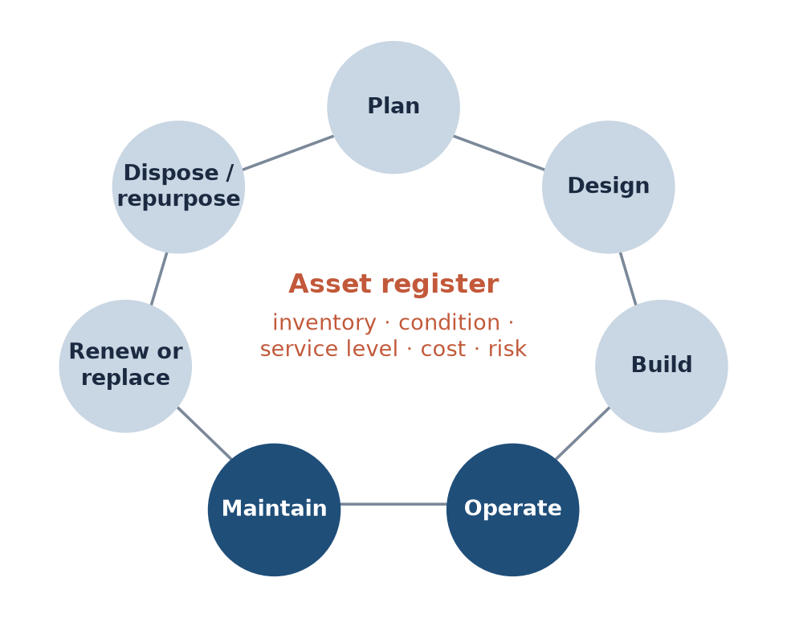
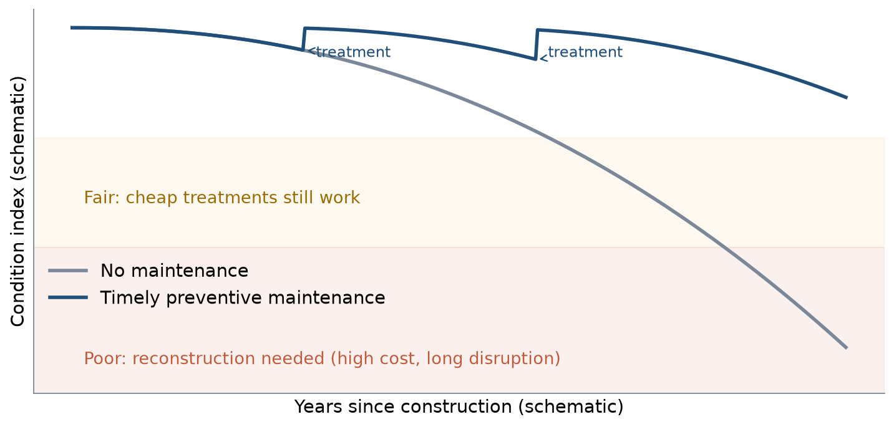
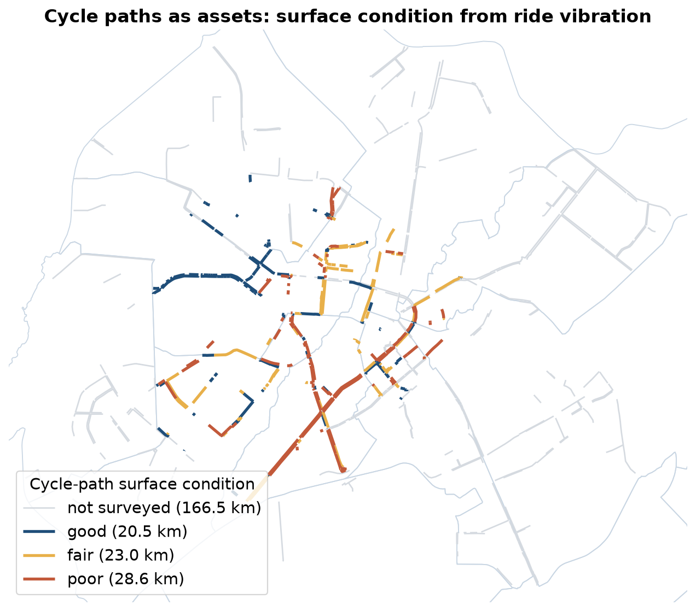

LEC17 · Urban Transport Systems Planning and Design · TSTU · Prof. J. Sodikov
1 / 22
What you will be able to do after today
Describe the life cycle of a transport asset from planning to renewal
Define condition, service levels and maintenance needs for street assets
Rank maintenance by condition, service importance and risk
Compare building new infrastructure with improving what exists
2 / 22
Week 4 designed networks, and this week is about keeping them working. You will describe the life cycle of a transport asset, from planning to renewal. You will define condition, service levels and maintenance needs for street assets, and rank maintenance by condition, service importance and risk. Finally, you will compare building new infrastructure with improving what already exists.
Where this sits: infrastructure management
Physical infrastructure management is the third of the course's four design perspectives
Question: how do we keep the network's service level at the lowest life-cycle cost?
Pavement engineering contributes deterioration and structure
World Bank (2017) adds climate risk to road asset management
3 / 22
Physical infrastructure management is the third of the four design perspectives in this course. It asks how to keep the network's service level at the lowest life-cycle cost, the total cost over the asset's whole life. Pavement engineering adds knowledge of deterioration and structure. The World Bank (2017) adds climate risk to road asset management. The course relies on it because the infrastructure-management unit of the source course on transport systems design is not openly published.
The asset life cycle

Most of an asset's life — and most of its cost to users — is in operation and maintenance.
4 / 22
The figure shows the life cycle of an asset as a loop: plan, design, build, operate, maintain, renew or replace, and finally dispose or repurpose. Operation and maintenance are highlighted, because they take up most of an asset's life and most of its cost to users. At the centre sits the asset register, which records inventory, condition, service level, cost and risk. Without this register, the assets cannot be managed.
The asset inventory
What exists, where, of what type, built when, owned by whom
Streets hold many asset classes: pavement, footways, cycle tracks, signals, lighting, drainage, trees
A GIS register links each asset to its network link and functional class
Without an inventory there is no budget argument — only complaints
5 / 22
An asset inventory records what exists, where it is, what type it is, when it was built and who owns it. A street holds many asset classes, such as pavement, footways, cycle tracks, signals, lighting, drainage and trees. A GIS register links each asset to its network link and its functional class. Without an inventory, an agency cannot argue for a budget and receives only complaints.
Condition and service levels
Condition: measured state — roughness (IRI) for roads, vibration for cycle paths, canopy for trees
Service level: what users should experience — smoothness, safety, shade, continuity
Targets should differ by functional class: arterials need more than local streets
Maintenance need = gap between condition and the service-level target
6 / 22
Condition is the measured state of an asset, such as roughness (IRI, the International Roughness Index) for roads, vibration for cycle paths or canopy for trees. A service level is what users should experience, such as smoothness, safety, shade or continuity. Targets should differ by functional class, so arterials need higher targets than local streets. The maintenance need is the gap between the condition and the service-level target.
Why timing matters

Schematic: treatments applied while the asset is still good keep it out of the fair and costly poor zones.
7 / 22
The schematic shows an asset's condition falling over the years. Without maintenance, the curve drops slowly at first and then quickly into the poor zone, where only costly reconstruction with long disruption helps. With timely preventive treatments, applied while the condition is still good, the asset stays out of the fair and poor zones. The curve's shape is illustrative, but the idea of treating early lies at the heart of managing pavements.
Types of maintenance
Type
Example on a Tashkent street
Disruption
Routine
Cleaning drains and aryks, pruning, fixing signals
Low
Periodic
Resurfacing, re-marking, replacing kerb ramps
Medium
Rehabilitation
Rebuilding a footway or cycle track
High
Reconstruction
New pavement structure, new drainage
Very high
Emergency
Clearing a flooded underpass, removing fallen trees
Unplanned
8 / 22
The table lists five types of maintenance and how much disruption each causes. Routine maintenance, such as cleaning drains and aryks, pruning and fixing signals, causes little disruption, and periodic work such as resurfacing causes medium disruption. Rehabilitation, such as rebuilding a footway or cycle track, causes high disruption, and reconstruction of the pavement structure and drainage causes very high disruption. Emergency work, such as clearing a flooded underpass, is unplanned. Routine work is easy to skip, but skipping it costs more later.
Worked example: fix early or rebuild later?
Assume a surface treatment costs 1 unit per m² while the asset is fair
Rebuilding the same surface after failure costs 5 units per m², plus weeks of closure
Budget of 100 units: treat 100 m² early, or rebuild 20 m² late
This worked example compares fixing early with rebuilding later. A surface treatment costs 1 unit per m² while the asset is fair, but rebuilding after failure costs 5 units per m², plus weeks of closure. With a budget of 100 units, you can treat 100 m² early or rebuild only 20 m² late. Users pay too, through detours, slower buses and cyclists pushed onto the road. The ratio is illustrative, not a measured value.
Prioritising: condition × importance × risk
Condition: how bad is the asset now?
Service importance: how many people, and which users, depend on it?
Risk: how likely is failure, and how severe — including climate hazards?
Multiply classes (1–3 each) to rank; then check the top of the list on site
This is P9 and LAB9
10 / 22
Maintenance can be ranked with three questions. Condition asks how bad the asset is now, and service importance asks how many people, and which users, depend on it. Risk asks how likely failure is and how severe it would be, including climate hazards. Give each a class from 1 to 3 and multiply them to rank the assets, then check the top of the list on site. The classes and weights are value judgements, so state them, as you will in P9 and LAB9.
Operating costs and service disruption
Works on a bus corridor cost passengers time every day of the closure
Coordinate utilities: dig once, then protect the new surface
Schedule night or summer-holiday works where demand is lowest
Keep a safe temporary route for pedestrians and cyclists — not the carriageway
11 / 22
Works on a bus corridor cost passengers time on every day of the closure. Coordinate the utilities so that the street is dug once, and then protect the new surface. Schedule works at night or in the summer holidays, when demand is lowest. Keep a safe temporary route for pedestrians and cyclists, and do not send them onto the carriageway.
New construction or improving existing assets?
New links add maintenance liabilities for decades
Improving existing assets is often cheaper per user served
Tashkent cycling: 57.2 km of gap links would join all fragments — 94% by upgrading sidewalks
A full new network on the audited streets would need 363 km
Compare whole-life cost and the connections gained (Week 4)
12 / 22
Every new link adds maintenance costs for decades, and improving existing assets is often cheaper per user served. In Normukhammadov's thesis, 57.2 km of gap links would join all cycle-path fragments, and 94% of that length runs along existing sidewalks that could be upgraded. A full new network on the audited streets would need 363 km. So compare the whole-life cost with the connections gained, as in Week 4.
Tashkent: managing street assets
Prof. Sodikov's road asset management research; Normukhammadov (2026); OpenStreetMap
13 / 22
The second part of the lecture applies asset management to Tashkent's streets. It draws on Prof. Sodikov's research on road asset management, Normukhammadov's (2026) cycling thesis and OpenStreetMap.
Road asset management research at TSTU
Road asset management systems in developing countries: the Uzbekistan case
Functional classification as the basis of asset management
IRI roughness requirements by functional class
Road data collection, visualisation and analysis for data-poor agencies
Lesson for streets: the same logic, more asset classes, more users
14 / 22
Research at TSTU has studied road asset management systems in developing countries, with Uzbekistan as the case. It treats functional classification as the basis of asset management and sets IRI roughness requirements by functional class. It also covers how agencies with little data can collect, visualise and analyse road data. City streets follow the same logic, but with more asset classes and more kinds of users.
The data gap is the first maintenance problem
Field audit: 238.7 km of cycle path; OpenStreetMap: 8.4 km of cycle track
OSM maps 6,935 trees; 99 of 2,896 surveyed walking segments have a mapped tree nearby
Asilbek's recommendation: the city should keep the audited network as its asset register
A register needs an owner, an update cycle and open access
15 / 22
The field audit in Normukhammadov's thesis found 238.7 km of cycle path, while OpenStreetMap records 8.4 km of cycle track. OpenStreetMap maps 6,935 trees, but only 99 of 2,896 segments of the surveyed walking network have a mapped tree nearby. Normukhammadov's thesis recommends that the city keep the audited network as its asset register. A register also needs an owner, an update cycle and open access.
Cycle paths as assets

Surface condition class from the thesis surface score (ride vibration); LAB9 computes the lengths.
16 / 22
The map shows each cycle path coloured by its surface condition, from good to poor, based on the thesis surface score from ride vibration. Grey paths are those that the camera survey did not cover. Grey therefore means unknown, not good. LAB9 computes the length in each condition class.
What the cycle-path condition data says
Poor surface: 28.6 of 72.1 km of surveyed cycle path
Cycle-path surface component 0.42 — the lowest of any facility
Vibration on paths 6.90 vs 1.60 m/s² on the roadway (median, typical speed)
Resurfacing existing paths is the first maintenance priority
17 / 22
A poor surface covers 28.6 of 72.1 km of surveyed cycle path. The cycle-path surface component, 0.42, is the lowest of any facility. Median vibration is 6.90 / 6.02 / 1.60 m/s² on cycle paths, sidewalks and roadway, so paths shake riders about four times as much as the roadway. Resurfacing existing paths is therefore the first maintenance priority.
A street's assets and what we know about them
Asset
Condition indicator
Tashkent data today
Carriageway
Roughness (IRI), cracking
Agency surveys; not open
Footway
Surface, width, obstructions
Partial OSM; field audit needed
Cycle track
Vibration, continuity
Normukhammadov (2026) audit
Street trees
Canopy, health, water supply
Heat-chapter shade survey; sparse OSM
Aryks and drains
Open, blocked, piped
Partial OSM; field check
Signals and lighting
Working, timing, lux
TSTU signal inventory (2016)
18 / 22
The table lists six street assets, how to measure their condition and what Tashkent knows about them today. Carriageway roughness is surveyed by agencies, but the data are not open. Footways, aryks and drains are only partly in OpenStreetMap and need field checks. Cycle tracks have Normukhammadov's audit, trees have the heat-chapter shade survey, and signals have a TSTU inventory from 2016. In P9 you will fill the same table for your corridor.
Discussion
Your district has one maintenance budget. Do you resurface a rough cycle path, replant a sunlit footway, or clear the aryks — and how do you defend the order?
Use condition, importance and risk explicitly.
19 / 22
Your district has one maintenance budget and three candidate works: resurfacing a rough cycle path, replanting a sunlit footway or clearing the aryks. Decide the order, and defend it with condition, importance and risk. State the classes you give each work, so that others can check your ranking.
Key takeaways
Manage assets over their whole life, not only at construction
Condition, service level and risk together set maintenance priorities
Early treatment is cheaper than late reconstruction — for agencies and users
Tashkent's first task is an open, maintained register of street assets
20 / 22
Manage assets over their whole life, not only when they are built. Condition, service level and risk together set the maintenance priorities. Early treatment is cheaper than late reconstruction, both for the agency and for users. Tashkent's first task is an open register of street assets that is kept up to date.
References
TU Delft, Department of Transport & Planning. CIEM6250 Transport Systems Design — units B-1 Network Design, B-2 Service Design, B-3 Physical Infrastructure Management, B-4 Traffic Operations Management (Smart Public Transport Lab education page; MSc Civil Engineering TTE track). https://www.tudelft.nl/citg/over-faculteit/afdelingen/transport-planning/research/labs/smart-public-transport-lab/education
World Bank (2017). Integrating Climate Change into Road Asset Management. Washington, DC: World Bank. https://openknowledge.worldbank.org/entities/publication/0c6626a3-7fcc-5de7-9ec0-4c2234f91c8a
Sodikov, J. I., et al. (2020). An overview of road data collection, visualization and analysis from the perspective of developing countries. IOP Conference Series: Materials Science and Engineering.
Sodikov, J. I., et al. (2016). GIS inventory of traffic signals on Tashkent streets (in Russian). Transport Systems of Siberia.
Sodikov, J. I. (2018). IRI roughness index requirements for highway functional classification.
Sodikov, J. I. (2017). The role of highway functional classification in road asset management. Advances in Transportation Studies.
Sodikov, J. I. (2015). Road asset management systems in developing countries: case study Uzbekistan.
Wilson, N., Sánchez-Martínez, G., & Nassir, N. (2017). 1.258J/11.541J Public Transportation Systems, Spring 2017. MIT OpenCourseWare. https://ocw.mit.edu/courses/1-258j-public-transportation-systems-spring-2017/
Normukhammadov, A. (2026). Pedalling Towards Sustainability: Developing an Integrated Bicycle Network for Enhanced Urban Mobility in Tashkent City (PhD thesis draft; supervisor J. I. Sodikov). Tashkent State Transport University.